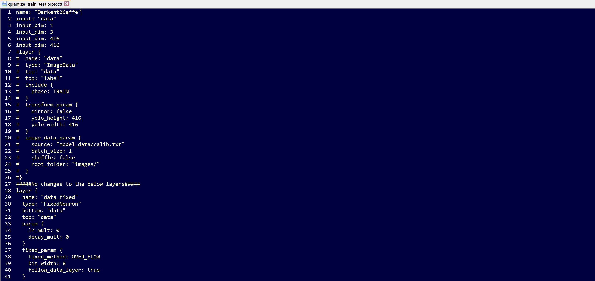

YOLOv4 Tutorials¶
Intro¶
The following tutorials cover how to train, evaluate, convert, quantize, compile, and deploy Yolov4 on the Xilinx ZCU102 and ZCU104 evaluation boards.
We modified the official Yolov4 model config in order to compatible with the Xilinx Zynq Ultrascale+ Deep Learning Processor (DPU). These modifications typically result in a 1-2% accuracy loss vs. the original model.
Vitis-AI does not natively support Darknet and the trained Darknet model and can be converted with two options:
TensorFlow using 3rd party repositories.
Caffe conversion using the Vitis-AI Darknet to Caffe conversion tool.
Each of the conversion floes is covered as a sperate Tutorial:
Yolov4 trained on COCO and using conversion to TensorFLow
Yolov4 trained on VOC and using conversion to Caffe
This tutorial is organized into the following steps:
1.) Installation and Darknet Setup
2.) Training on Coco and Converting to TensorFLow
2.1) Darknet Model Training for Coco
2.2) Darknet Model Conversion to TensorFLow
2.3) Model Quantization and Compilation
2.3) Model Deployment on ZC102
3.) Training on VOC and Converting to Caffe
3.1) Darknet Model Training for VOC
3.2) Darknet Model Conversion to Caffe
3.3) Model Qauntization
3.4) Model Evaluation
3.5) Model Compilation
3.6) Model Deploymnet on ZCU104
1.) General Installation and Darknet Setup¶
A few quick assumptions about the environment:
Ubuntu 16.04, 18.04 or other linux Vitis-AI supported distributions.
If you’re expecting to do model training/evaluation, ensure you have NVidia Drivers, CUDA 10.0, and CuDNN installed to /usr/local/cuda (it can be a soft link)
The automated scripts use conda, so make sure you have Anaconda installed if you wish to use these.
I have opencv 4.4 installed.
This Tutorial has been tested on Vitis-AI 1.2
The first step is to clone and follow the install steps for Vitis-AI on the host machine: https://github.com/Xilinx/Vitis-AI
Next extract the contents of this tutorial within the Vitis-AI folder
The AlexyAB branch of Darknet is needed to train the yolov4 model:
git clone https://github.com/AlexeyAB/darknetNext cd to the Darknet folder, open the Makefile, and make the following edits (assuming you have a CUDA capable GPU):
GPU=1 CUDNN=1 CUDNN_HALF=0 OPENCV=1 LIBSO=1
Build Darknet by running ‘make’ (you can use ‘make -jx’ where x is the number of processors you have).
make
2.) Yolov4 using COCO Data Set and converting to TensorFlow Tutorial¶
This Tutorial Covers the Darknet to TensorFlow process.
2.1) Darknet Model Training on COCO¶
To convert to TensorFlow you will also need the following repository:
david8862 Keras Model Set: https://github.com/david8862/keras-YOLOv3-model-set
git clone https://github.com/david8862/keras-YOLOv3-model-set
Create, activate, and set up a virtual environment by running:
./setup_environment.sh
conda activate yolov4
pip install -r requirements.txt
For this tutorial I use the COCO 2017 dataset, though COCO 2014 will also work as well, and of course you can adapt it to whichever detection dataset makes sense for your application.
In terms of differences versus the official Yolov4 model, I made two main modifications to enable compliance with the Zynq Ultrascale+ DPU:
The MISH activation layers are swapped to leakyrelu as the DPU doesn’t support MISH
The SPP module maxpool sizes have been changed to 5x5, 6x6, and 8x8 as the DPU has a maximum kernel size of 8x8
After making these changes to the model and retraining on COCO 2014/2017, the yolov4 model achieves 63.4% mAP @ IOU50 and 41.3% AP using the COCO test2017 image set on the Codalab COCO evaluation server. This is approximately a 2% degradation in mAP from the original model, though still a significant improvement over Yolov3 (~9% AP improvement).
I’ve provided a few scripts to help setup the COCO2017 dataset as Darknet requires a specific format for the labels.
You’ll need to download the train and validation images as well as the associated annotations:
train images: http://images.cocodataset.org/zips/train2017.zip
val images: http://images.cocodataset.org/zips/val2017.zip
train/val annotations: http://images.cocodataset.org/annotations/annotations_trainval2017.zip
Once you’ve extracted these files, you can use some of the provided scripts to process the annotations and generate the files needed for training within darknet.
Under the scripts directory, I’ve provided two scripts “gen_yolo_train_labels.sh” and “gen_yolo_val_labels.sh”. Open these two scripts and edit the paths to the annotations files as well as images. The -labels argument provides a path where to write the txt files and darknet expects these to be in the same directory as the images.
After providing the specific paths to your dataset, run these two scripts - it will take some time (likely a couple hours) to process all the annotations.
Next you need to generate the list files val2017.txt and train2017.txt which are used by darknet to provide a list of images for training and validation. I have provided a script (dk_files/gen_coco_lists.sh) that can be used for this purpose though you will need to open it and edit the paths to the validation and training datasets.
I have provided a pre-trained model under the dk_model directory. This model has been trained using AlexayAB leakyrelu.weights as a starting point, then trained for about 200K iterations on COCO2014, and another ~20K Iterations on COCO2017. The model weights are provided as a multi-part zip file, so you can just right click ‘yolov4-leaky_best.weights.7z.001’ and extract it to get the single combined weights file.
You can then run fine-tune training on the model in darknet by changing directory to “dk_files” and running
./train_yolov4.sh. Generally, when training, I set the model.cfg file input size to 512x512, and when deploying the model, it can be changed to a smaller input size such as 416x416 to increase FPS.I have also provided a script to measure map with Darknet directly and this is under ‘dk_files/dk_measure_map_yolov4.sh’. This approach reports an mAP of about 70% @ 50IOU when using 512x512 input size.
When measuring accuracy with the pycocotools, I have observed that the mAP is about 60.2%. A script has been provided under scripts/dk_eval_yolov4_pycocotools_2017.py. It’s possible that the difference lies in the evaluation code used by darknet vs. pycocotools which compares the output to the ground truths, though I haven’t investigated this extensively.
This script uses the instances_val2017.json file to loop through each annotation, read the image, run inference in darknet and post processing, then write the results to a json file. The results are then read back in at the end and evaluated with the pycocotools API.
2.2.) Darknet Model Conversion¶
The next step is to convert the darknet model to a frozen tensorflow graph. The keras-YOLOv3-model-set repository provides some helpful scripts for this.
In order to convert the model that is populated under dk_model, you can simply cd to the scripts directory and run ‘convert_yolov4.sh’. This will create the keras.h5 model as well as the converted frozen TF graph under the tf_model folder.
In order to evaluate the converted model, I have provided a script ‘tf_eval_yolov4_coco_2017.py’ which can be used to evaluate the tensorflow frozen graph against the COCO2017 validation set.
One key step is that this file expects the val2017 folder (containing the images for validation) and instances_val2017.json to be present under the scripts folder. The reason for this is so that this script can be run with the quantized model within the docker container. Make sure to copy these two items directly into the scripts folder before running the evaluation.
The mAP when measured on the frozen tf model with this approach is ~60.2% @ IOU50.
At this point the frozen tf graph under tf_model/tf_model.pb is ready for quantization/compilation.
Notes on Alternative Conversion Flow:¶
If you run into trouble converting your model with the david8862 Keras Model Set repository, there is an alternative approach for converting the model. The alternative repository can be found here: https://github.com/qqwweee/keras-yolo3.
This repository has a similar script (convert.py) which can be used to convert from Darknet to Keras. You will need to update the model_data/yolo_anchors.txt with the yolov4 anchors, but otherwise, I have tested this repository and it results in the exact same accuracy as the other conversion repository.
If you use this alternative approach for converting the model, you will still need to use convert from Keras to tensorflow which can be done using the other david8862 Keras Model Set repository Keras to tensorflow script. You can reference the scripts/convert_yolov4.sh for an example command to do this step.
This repository results in different layer names, so in order to run the quantization, you’ll need to modify the quantize_yolov4.sh script and change the following:
Change –input_nodes to input_1
Change –output_nodes to conv2_94/BiasAdd,conv2_102/BiasAdd,conv2_110/BiasAdd
You’ll also need to modify the yolov4_graph_input_keras_fn.py to and change line 95 to:
return {“input_1”: images}
If you want to use the evaluation script “tf_eval_yolov4_coco_2017.py”, you will also need to make the same updates as noted above on lines 514-517.
When deploying the model, you’ll also need to update the dpu_yolov4.prototxt file which is under the dpu_yolov4 folder and change the layer_name parameters (increment them by 1).
2.3) Model Quantization/Compilation¶
At this point, you will need to start the docker container and activate the conda environment for tensorflow ‘conda activate vitis-ai-tensorflow’.
Next install pycairo and pycocotools (both can be installed with pip).
If you followed the steps in the previous section, you should have the validation images in the scripts directory, if you didn’t go ahead and copy val2017 into the scripts directory
Change directory to the scripts folder and run
./quantize_yolov4.sh. This will produce a quantized graph in the yolov4_quantized directory a level above the scripts directory.The quantized model can now be evaluated against the COCO2017 dataset by modifying ‘tf_eval_yolov4_coco_2017.py’ and setting quantized = ‘1’.
My quantized model achieves ~58.1% mAP @ IOU50 on COCO2017 validation set.
The model can now be compiled for the ZCU102 by running
./compile_yolov4.shfrom the scripts directory
2.4) Model Deployment¶
Once you’ve set up your board image to run the Vitis-AI-Library examples, you can proceed to the following steps.
The code used to run yolov3 from the Vitis-AI-Library can also be used to run yolov4. If the target has been setup correctly, this should be present under ~/Vitis-AI/vitis_ai_library/samples/yolov3
On the host machine copy the compiled model .elf file (or use my pre-trained one already present there) to the the dpu_yolov4 directory.
If using my pretrained model, you’ll need to extract it by right clicking “dpu_yolov4.elf.7z.001” and selecting ‘extract’.
Otherwise, just copy your elf file to the dpu_yolov4 directory
Next copy the entire dpu_yolov4 directory into the yolov3 samples directory on the target ZCU102 board.
Build the yolov3 example by running ‘bash -x build.sh’
Run with 6 threads with a webcam using:
./test_video_yolov3 dpu_yolov4 0 -t 6
In this short tutorial, we’ve covered how to train, evaluate, convert, quantize and deploy a dpu compatible version of yolov4 the ZCU102 board. Good luck and happy developing!
3.0) Yolov4 using VOC Data Set and converting to Caffe Tutorial¶
This tutorial covers the Darknet to Caffe process.
3.1) Darknet Model Training on VOC¶
This Tutorial uses the VOC dataset. You can run the following script to download the dataset and ground truth files. A python file is used to create the labels so you will need to create a python env if you do not have one:
conda create -n yolov4 pip python=3.6
conda activate yolov4
bash scripts/get_voc_dataset.sh
Next you will need to modify the configuration file darknet/cfg/yolov4.cfg to be compatible with the Zynq Ultrascale+ DPU. The MISH activation layers are swapped to leaky as the DPU doesn’t support MISH. The SPP module maxpool section has kernel sizes of 5, 9, 13, and the DPU only supports a maxpool kernel size of upto 8. There are also additional restrictions for maxpool when the stride=1 and converting to Caffe. There are 3 possible changes you can make:
Change all max kernel sizes to 1, 1, 1
Change all kernel sizes 3,5, 7
Comment out max_pool layers.
I saw the best post Quantization accuracy results when commenting out the 3 max_poolong layers as follows:

Make the following additional changes:
set height to 416 and width to 416
set max_batches to 1001000
set number of classes to 20 for each output layer
set filter size of convolutional layer before each output layers to 75
Note that the batch size divided by the subdivision is the number of images sent to the GPU at one time. I used a subdivsion value of 16. If your GPU has enough memory you can try reducing the subdivision size to a smaller number for faster training. If you get a GPU memory error during training you will need to go back and increase the subdivision value.
Make the following changes to the darknet/cfg/voc.data file:

Download Yolov4 pretrained weights. From within the darknet directory run:
wget https://github.com/AlexeyAB/darknet/releases/download/darknet_yolo_v3_optimal/yolov4.weights
Launch Training:
./darknet detector train cfg/voc.data cfg/yolov4.cfg yolov4.weights -map
It should take about 150K Iterations for the training to converge. To measure accuracy you can use the following command:
./darknet detector map cfg/voc.data cfg/yolov4.cfg backup/yolov4_best.weights -letterbox -point 11
For my trained model I saw:
mAP for model with modifications 82.39%
mAP for orginal model with no modification 82.55%
The model weights are provided as a multi-part zip file, so you can just right click ‘yolov4_voc_best.weights.7z.001’ and extract it to get the single combined weights file.
3.2) Darknet Model Conversion¶
The next step is to convert the darknet model to a Caffe model. This will be done using the built in conversion function which is part of the Vitis-AI Caffe install.
bash <Path to Vitis-AI Install>/Vitis-AI_1.2/docker_run.sh xilinx/vitis-ai-gpu:latest
conda activate vitis-ai-caffe
bash scripts/darknet_convert.sh
3.3) Model Quantization¶
Before quantizing the model, we will need to make a minor modifcations to .prototxt file to point to the calibration images. Make a new copy of the prototxt file and make the following edits:
cp voc/yolov4.prototxt voc/yolov4_quant.prototxt

FOr your convience here are the lines to copy:
name: "Darkent2Caffe"
#input: "data"
#input_dim: 1
#input_dim: 3
#input_dim: 416
#input_dim: 416
####Change input data layer to VOC validation images #####
layer {
name: "data"
type: "ImageData"
top: "data"
top: "label"
include {
phase: TRAIN
}
transform_param {
mirror: false
yolo_height:416 #change height according to Darknet model
yolo_width:416 #change width according to Darknet model
}
image_data_param {
source: "model_data/calib.txt" #list of calibration imaages
root_folder: "images/" #path to calibartion images
batch_size: 1
shuffle: false
}
}
#####No changes to the below layers#####
bash scripts/run_via_q.sh
3.4) Compare Accuracy Between Floating Point and Quantized Models (Optional)¶
bash scripts/test_caffe_fp.sh
bash evaluate_caffe_fp.sh
The mAP value for our trained model was 84.03%

Generate predictions using quantized model¶
In order to run predictions on the quantized model, we first will need to make some minor edits to the simulation prototxt file quant_output/quantize_train_test.prototxt Make the following edits to input layer so that you file looks like the following:

bash scripts/test_quantized.sh
bash scripts/evaluate_quantized.sh
The map value for our quantized model was 82.48%

3.5) Model Compliation¶
Prototxt File Mods¶
Before compiling the model we will need to make a minor edit to the deploy prototxt file yolov4_quantized/deploy.prototxt. Comment out lines 5-9 as shown below:

bash scripts/run_via_c_zu104.sh
The compiled elf file will be located in yolov4_compiled/dpu_yolov4_voc.elf
3.6) Running the Vitis AI Library Examples¶
Once you’ve set up your board image to run the Vitis-AI-Library examples, you can proceed to the following steps.
The code used to run yolov3 from the Vitis-AI-Library can also be used to run yolov4. If the target has been setup correctly, this should be present under ~/Vitis-AI/vitis_ai_library/samples/yolov3
On the host machine copy the compiled model .elf file (or use my pre-trained one already present there) to the the dpu_yolov4_voc directory.
If using my pretrained model, you’ll need to extract it by right clicking “dpu_yolov4_voc.elf.7z.001” and selecting ‘extract’.
Otherwise, just copy your elf file to the dpu_yolov4_voc directory
Next copy the entire dpu_yolov4 directory into the yolov3 samples directory on the target ZCU104 board.
If you would like to run the yolov3 accuracy example you will need to make the following edit to line 85 of the file: yolov3_voc_accuracy.cpp

Build the yolov3 example by running ‘bash -x build.sh’
Running the Yolo Video Test¶
To run the Yolo Video Test webcam using 4 threads use the following command. Assuming that you have a DP Monitor connected, you will also the DISPLAY variable first.
export DISPLAY=:0.0
./test_video_yolov3 dpu_yolov4_voc 0 -t4
Running the Yolo Accuracy Test¶
To run the Yolo Accuarcy test against the VOC data test set, you will need to copy the images directory from the host machine to the target ZCU104 board. In addition copy the image list file voc/2007_test.txt to the targt board.
Change the conf_threshold value in file yolov4_voc.prototxt to 0.005
./test_accuracy_yolov3_voc 2007_test.txt yolov4_voc_pred.txt
This will take a few minutes to run. When the predictions complete, copy the file yolov4_pred.txt to your host machine and run the evaluation from within your Vitis-AI Caffe conda environment:
bash ./scripts/evaluate_board.sh
The mAP reported should be close to what was reported for the Quantized mAP
Running the Yolo Performance test¶
To run the Yolo Performance Test, create a file called image.list on the ZCU104, and add the first 5 images names from the file 2007_test.txt. To run with 4 threads use the following command:
Running on a ZCU104 you should see a performance of 29.7FPS.
./test_performance_yolov3 dpu_yolov4_voc image.list -t4 -s30
In this short tutorial, we’ve covered how to train, evaluate, convert, quantize and deploy a dpu compatible version of yolov4 on the ZCU104 board. Good luck and happy developing!
Copyright© 2020 Xilinx Inc.
Licensed under the Apache License, Version 2.0 (the "License"); you may not use this file except in compliance with the License. You may obtain a copy of the License at: http://www.apache.org/licenses/LICENSE-2.0. Unless required by applicable law or agreed to in writing, software distributed under the License is distributed on an "AS IS" BASIS, WITHOUT WARRANTIES OR CONDITIONS OF ANY KIND, either express or implied. See the License for the specific language governing permissions and limitations under the License.